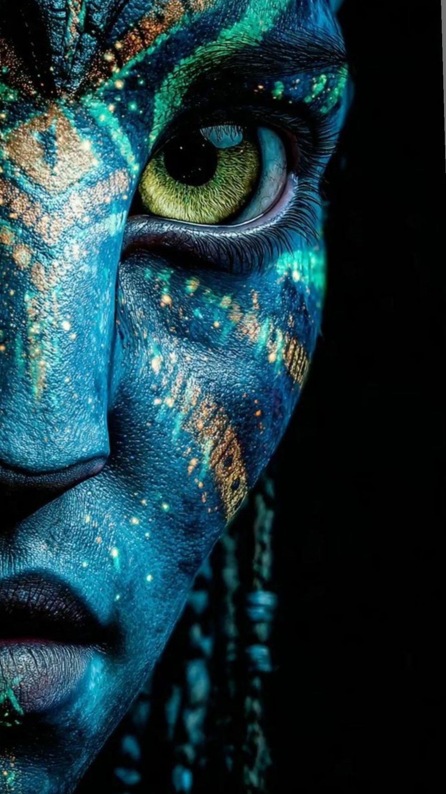
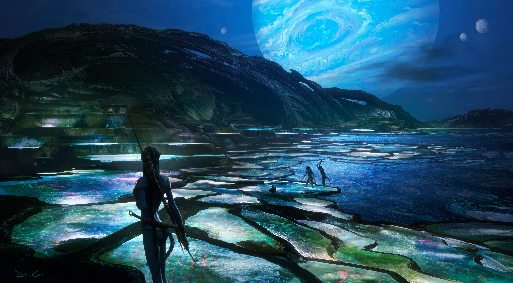
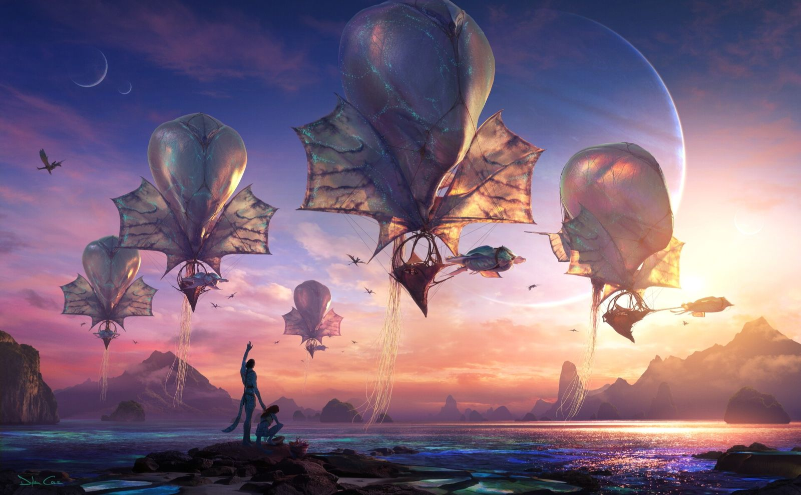

AÑO 2154
La humanidad ha descubierto la mítica tierra de los Na'vi, un ecosistema único lleno de bosques bioluminiscentes y criaturas extraordinarias, dueñas de un gran tesoro, el mineral más valioso del universo, el Unobtanium. La historia, dirigida por James Cameron, nos sumerge en un conflicto épico entre la codicia humana y la supervivencia de los nativos de la mano de Jake Sully, un exmarín que se infiltra en este mundo.
Un detalle fascinante de esta producción es que James Cameron concibió la idea en 1995, pero esperó más de 10 años para filmarla porque la tecnología de la época era incapaz de recrear de forma realista a los personajes y el entorno. Únete a nosotros para explorar este viaje de redención, amor y conexión con la naturaleza que cambió el cine para siempre.
Avatar (2009)

Jake Sully, un exmarín parapléjico, es enviado al exótico satélite Pandora para infiltrarse entre los nativos Na'vi utilizando un cuerpo biológico llamado "Avatar". A medida que se sumerge en su cultura y se enamora de Neytiri, Jake se ve atrapado en un dilema moral: liderar la defensa de este mundo interconectado o cumplir las órdenes de una corporación militarizada que busca explotar sus recursos naturales
Avatar: El camino del agua (2022)

Más de una década después de los eventos de la primera entrega, Jake Sully y Neytiri han formado una familia en los bosques de Pandora. Sin embargo, el regreso de la implacable amenaza humana los obliga a abandonar su hogar y buscar refugio con el clan Metkayina, una sociedad adaptada a la vida en los océanos. Allí, la familia deberá aprender a dominar los misterios del agua mientras libran una batalla desesperada por sobrevivir.
Avatar: Fuego y cenizas (2025)

Tras una devastadora batalla y una dolorosa pérdida familiar, Jake y Neytiri se enfrentan a un peligro sin precedentes que proviene de su propio mundo: el "Pueblo de las Cenizas". Esta es una tribu Na'vi agresiva, volcánica y consumida por el rencor, que se alía con los humanos utilizando el poder destructivo del fuego. Los protagonistas deberán llevar sus límites emocionales al extremo para evitar una guerra total que destruya Pandora desde dentro.
PRODUCCIÓN
ESCRIBIENDO HISTORIA
¿Sabías que el guion de Avatar fue escrito por James Cameron en tan solo dos semanas? Según sus propias palabras, ese tiempo le tomó escribir un script de ochenta páginas. Esta primera versión de la historia estaba protagonizada por Josh Sully, en vez de Jake Sully, aunque todas las ideas principales del guion definitivo ya aparecían. En agosto de 1996, Cameron anunció que, después de terminar el rodaje de Titanic, tenía intención de filmar Avatar, donde quería emplear actores sintéticos y imágenes generadas por computadora.
UN MUNDO COMPLETAMENTE NUEVO
Uno de los mayores desafíos de la producción fue crear Pandora desde cero. James y su equipo diseñaron una gran cantidad de elementos del universo de la película: los paisajes, las criaturas, las plantas, el idioma Na’vi y la cultura de sus habitantes. Cada detalle fue pensado para construir un mundo que pareciera real y tuviera sus propias reglas.
TECNOLOGÍA Y EFECTOS VISUALES
Avatar revolucionó el uso de los efectos digitales en el cine. La producción combinó actores reales con personajes y escenarios creados mediante computadora. Para interpretar a los Na’vi se utilizó la técnica de captura de movimiento, que permitió registrar los movimientos y expresiones de los actores y transformarlos posteriormente en personajes digitales. También se desarrollaron sistemas especiales para trabajar con la iluminación, los escenarios y las criaturas de Pandora.